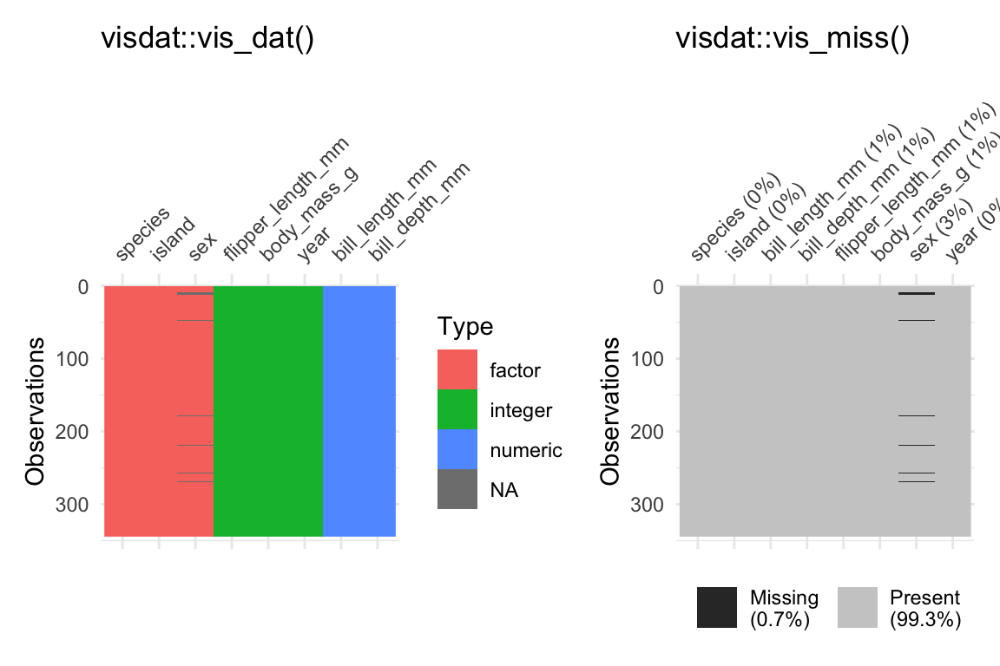

Data Exploration
Welcome to the data exploration tutorial of the Practice R book (Treischl 2023). Practice R is a text book for the social sciences which provides several tutorials supporting students to learn R. Feel free to inspect the tutorials even if you are not familiar with the book, but keep in mind these tutorials are supposed to complement the Practice R book.

In this tutorial we recapture the most important functions to explore
data, but this time you will explore the palmerpenguins
package and the penguins data (Horst, Hill, and Gorman 2022). The latter
contains information about three different penguins species (Adélie,
Chinstrap, and Gentoo) and Allison
Horst has made some wonderful illustrations of them. Click on the
hex sticker to inspect the package website.

# Tutorial 03: Explore data
library(dplyr)
library(GGally)
library(summarytools)
library(skimr)
library(palmerpenguins)
library(visdat)The tutorial has the same structure as Chapter 3: We explore
categorical variables, continuous variables, and effects. Before we
start with variables, it is always a good idea to explore the data in
general terms. First, I assigned the data as df, which
makes it possible for us to recycle a lot of code from Chapter 3. Next,
explore which variables does the penguins data contain. Use
the glimpse() or the str() function for a
first look of the penguins data. The glimpse()
function is loaded via the dplyr package, but comes from
the pillar package (Müller and
Wickham 2022).
# Use glimpse, head, or the str function for a first look
df <- penguinsglimpse(df)Thus, there are several factor variables such as penguin’s
species or island; numerical variables such as
bill (bill_length_mm) and flipper length
(flipper_length_mm); and integers such as the
year variable. Keep in mind that R packages come with help
files that show us how functions work and they provide more information
about data. Use the help function (?penguins) if you feel
insecure about the content of the data.
Categorical variables
We started to explore categorical variables in Chapter 3 and I
outlined a few basics about factor variables. Suppose we want to explore
the factor variable island, which indicates where the
penguins live. How can you examine unique group levels?
# Inspect the levels() of the penguin's home islandlevels(df$island)We will deepen our knowledge about factor variables in Chapter 5, but
keep in mind that we can (re-) create and adjust factor()
variables. For example, suppose the data looks like a messy character
vector for penguin’s sex that I have created in the next
console. In such a case it is good to remember that we can give the
variable proper text labels (e.g., female for
f) and examine the results.
# Example of a messy factor variable
sex <- c("m", "f", "f")
# Give clearer labelssex <- factor(sex,
levels = c("f", "m"),
labels = c("female", "male")
)
head(sex)Tables help us to explore data and we used the
summarytools package to make frequency and cross tables
(Comtois 2022). Keep in mind that we will
learn how to create text documents with tables and graphs in Chapter 8.
For the moment it is enough to remember that we can create different
sort of tables with the summarytools package. For example,
create a frequency (freq) table to find out on which
island most of the penguins live.
# Create a frequency tablefreq(df$island)As outlined in the book, we can use the table() function
to count categorical variables and plot the result as a bar graph. I
introduced the latter approach because it is very easy to apply, but our
code becomes clearer if we make the necessary steps visible. First, we
need to count the levels before we can plot the results. The
count() function from the dplyr package does
this job (Wickham et al. 2022). It needs
only the data frame and the factor variable.
# Count islands with dplyrcount_island <- dplyr::count(df, island)
count_islandNext, use the assigned results (count_island) and insert
the variables into the barplot() function (with the formula
y ~ x).
# Create a barplotbarplot(n ~ island, data = count_island)
In a similar vein, I introduced functions from the
DataExplorer package that help us to get a quick overview
(Cui 2020). For example, use the
plot_bar() function to depict several or all discrete
variables of a data frame.
# Inspect all or several plots at onceDataExplorer::plot_bar(df[1:2])Continuous variables
To explore continuous variables, estimate the summary statistics with
the summary() function. Pick one variable such as penguin’s
body mass in gram (body_mass_g) or use the entire data
frame.
# Get a summarysummary(df[1:4])The classic approach to visualize the distribution of a continuous
variable is a histogram. Use the hist() function to display
the distribution of the penguins body mass.
# Create a histogramhist(df$body_mass_g)Keep in mind that we only explored the data for the first time. We
did not clean the data nor did we prepare the variables. We have to be
explicit about missing values when we want to apply functions such as
the mean. The function returns NA, but only
because of a missing values problem. Can you remember how to fix this
problem and estimate, for example, the mean?
# Calculate the mean, but what about missing values (na.rm)?mean(df$body_mass_g, na.rm = TRUE)I picked data that was more or less prepared to be explored, because
data preparation needs more time and effort especially in the beginning.
For this reason we will learn how to manipulate data in Chapter 4; and
Chapter 5 tries to prepare you for own journey. For example, we use
packages such as visdat and naniar to identify
missing values, as the next console illustrates with two examples (Tierney et al. 2021). The
vis_dat() function from the corresponding packages shows us
which type of data we have with missing values in gray; while
vis_miss() visualizes missing values in general terms. Keep
in mind that Chapter 3 did not introduce data preparation steps which
are often necessary to explore data and effects between variables.
library(visdat)
# Left plot: vis_dat()
vis_dat(df)
# Right plot: vis_miss()
vis_miss(df)
Explore effects
Let’s start with an effect between two categorical
variables. There are different packages that provides functions to
create (cross) tables, but we used the summarytools
package. It even provides a simulated data set which we will use the
repeat the steps to create a cross table. The package comes with the
tobacco data, which illustrates that smoking is harmful. As
the next console shows, it indicates if a person is a
smoker and if the person is diseased.
head(tobacco)[1:8]Use the ctable function from the
summarytools package to make a cross table for these
variables. See also what happens if you adjust the prop
option. Insert c or t. Furthermore, explore
what happens if you set the chisq, OR, or
RR option to TRUE.
#Create a cross table with summarytools
summarytools::ctable(
x = ___,
y = ___
)summarytools::ctable(
x = tobacco$smoker,
y = tobacco$diseased,
prop = "r",
chisq = TRUE,
OR = TRUE
)The prop option lets you determine the proportions: rows
(r), columns (c), total (t), or
none (n). Furthermore, the function even adds the
chi-square statistic (chisq); the odds ratio
(OR) or the relative risk (RR) if we set them
to TRUE. Never mind if you are not familiar with the
latter, the discussed options only illustrated how the
summarytools package helps us to explore data and
effects.
In the social sciences we are often interested in comparing
numerical outcomes between categorical variables (groups). For
example, one of the penguin’s species has a higher body mass and we can
examine which penguins species differ in terms of their
body mass (body_mass_g). With base R, the
aggregate() function lets us split the data and we are able
to estimate the mean for each species.
# Aggregate splits the data into subsets and computes summary statistics
aggregate(df$body_mass_g, list(df$species), FUN = mean, na.rm = TRUE)To calculate a group-mean looks quite complicated and I did not
introduce the latter since we will systematically work on our skills to
manipulate data in the next Chapter. Instead, we used a box plot to
explore a continuous outcome between groups. As outlined in the book,
box plots can be very helpful to compare groups even though they have
graphical limitations since they do not display the data. Keep the
boxplot() function in mind and practice one more time how
it works. Inspect how penguin’s body mass differs between the
species.
# Inspect group differences with a box plotboxplot(body_mass_g ~ species, data = df)If we examine an effect between two continuous outcomes, we
have to keep in mind that the plot function returns a
scatter plot and we may insert a regression line with the
abline and the lm function. Do you still know
how it works? Create a scatter plot to examine the association between
the body mass (body_mass_g) and the flipper length
(flipper_length_mm) of the penguins.
# Create a scatter plot
# And a red regression line# Create a scatter plot
plot(y = df$body_mass_g, x = df$flipper_length_mm)
# And a red regression line
abline(lm(body_mass_g ~ flipper_length_mm, data = df),
col = "red"
)Furthermore, we learned how to calculate the correlation coefficient.
The code of the next console does not work if I apply the
cor() function with the penguins data. Do you have any idea
how to fix the problem?
# Calculate the correlation between x and y
cor_penguins <- cor(df$body_mass_g, df$flipper_length_mm)
cor_penguinscor_penguins <- cor(df$body_mass_g, df$flipper_length_mm,
use = "complete"
)
cor_penguinsBy the way, the cor() also returns Kendall’s or
Spearman’s if you adjust the method option:
# estimate a rank-based measure of association
cor(x,
y = NULL, use = "complete",
method = c("pearson", "kendall", "spearman")
)
Finally, the effectsize package helped us with the
interpretation of Pearson’s r (and other stats, see Chapter 6). I copied
the code from the book; can you adjust it to interpret the effect of the
examined variables with the effectsize package (Ben-Shachar et al. 2022)?
# Use effectsize to interpret R
effectsize::interpret_r(correlation, rules = "cohen1988")effectsize::interpret_r(cor_penguins, rules = "cohen1988")
There are more R packages to explore data than I could possibly
outline. For example, consider the skimr package (Waring et al. 2022). It skims a data set and
returns, for example, a short summary, summary statistics, and missing
values. Inspect the vignette and skim() the data
frame.
# Inspect skimr package (and vignette)
# vignette("skimr")skimr::skim(df)Or examine the ggpairs() function from the
GGally package (Schloerke et al.
2021). It provides many extensions to create graphs (with
ggplot2 see Chapter 7); and it also has functions to
explore data and effects. The ggpairs() function returns a
graph for a pairwise comparison of all variables. Depending on the data
type, it returns bar plots, density plot, or the correlation between
variables and combines all plots in one graph.
# GGally: https://ggobi.github.io/ggally/GGally::ggpairs(df[2:5])Summary
Data exploration can be exciting since we explore something new. Unfortunately, it can be painful if the data is complex or messy. For this reason we used a simple and clean data, but we will start to manipulate complex(er) data and prepare messy data soon. Keep the following functions from Chapter 3 in mind:
Get a glimpse of your data (
dplyr::glimpse); display the structure of an object (str); and inspect the first or last parts of an object (head/tail)Create a factor variable (
factor); levels attributes (levels); object labels (labels)Simple cross table (
table)Get a summary (
summary)Summary statistics (
min, mean, max, sd)Correlation, variance and covariance (matrices) via (
cor); or with thecorrelationpackage (Makowski et al. 2022)Graphs: Bar plots (
barplot); histograms (hist), spine plot (spineplot), box plot (boxplot), scatter plot (plot), correlation matrix (corrplot::corrplot)Packages:
- The
summarytoolspackage provides many tables: (e.g.,freq, ctable) - The
DataExplorerto visualize several variable at once: (e.g.,plot_bar) - The
effectsizepackage to interpret results: (e.g.,interpret_r)
- The
Finally, a link to download this tutorial as PDF file.
References